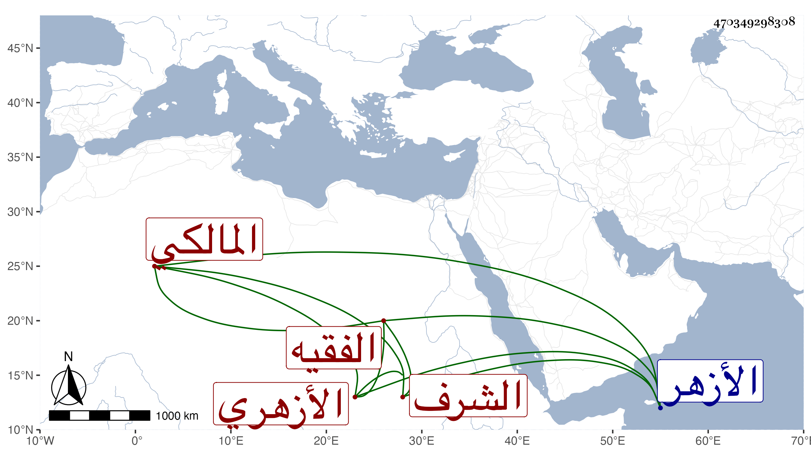

0902Sakhawi.DawLamic.ITO20230111-ara1.EIS1600.470349298308
Biography ID: 470349298308
333
عمر بن علي بن شعبان بن محمد بن يوسف الشرف الثنائي ... الأزهري المالكي الفقيه والد علي الماضي . ولد تقريبا سنة ست وعشرين بتتا ، ونشأ بها فحفظ القرآن وتحول منها وهو ابن ثلاثين سنة أواخر أيام الظاهر جقمق فقطن الأزهر ، وكان ممن اشتغل عند أبي القسم النويري والزين طاهر والنور الوراق والنور علي والشهاب أحمد ابني عبادة وأولهما وإن كان أكبر فآخذه عن ثانيهما أكثر والقاضيين الولوي السنباطي واللقاني ويحيى العلمي وعبد الغفار السمديسي والتريكي البيدموري قرأ عليه من أول ابن الحاجب إلى الزكاة وبجائي من العلماء ممن به مرض العشاء وهم متفاوتون في أخذه عنهم وربما أخذ عن بعضهم في غير الفقه من عربية وأصول وغيرهما بل أخذ عن عبد السلام البغدادي والتقي الشمني والشمس محمد الكيلاني وكان يجلس بمقصورة الجامع وغيرهم في العلوم العقلية وقرأ الشاطبية على الشهاب السكندري ثم لازم السنهوري في الفقه والأصلين والعربية وغيرها مقتصرا عليه حتى برع في الفقه وشارك في غيره ، وطلب الحديث كثيرا وسمع ختم البخاري في الظاهرية القديمة ، وأسمع أولاده ، وكتب عني في بعض مجالس الإملاء وحج وجلس لإقراء الأبناء في الأقبغاوية فانتفعوا به طبقة بعد طبقة وصار من جماعته عدة من فضلاء المذاهب بل أقرأ الطلبة وأفتى وهش وتناقصت حركته وصار من أفراد قدماء الجامع ونعم الرجل .
